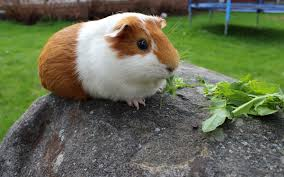
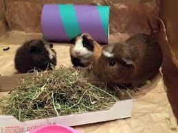
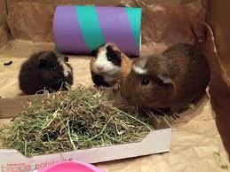

Mini

Mini is a 10 year old yorkshire terrier who’s grown up along with me. She enjoys playing and taking baths and is the sweetest dog you could ask for. My mom brought her from a shelter in Ecuador when she was just a couple of months old and even though it was over ten years ago, I remember that day like it was yesterday.
Mini’s quite small, even smaller than the average yorki so she’s quite sensitive physically speaking. However, she still tries to protect our home when she hears a stranger at the door despite her size. Mini loves her family and has a big heart!
Photo Gallery


Likes
- Squeaky Toys
- Baths
- Belly Rubs
Bacon Q Dog

Bacon Q. Dog is a 9yr old labradoodle. He prefers to spend his days lounging among the three different beds/couches that his family has gifted him. He enjoys a walk or two around the neighborhood, as long as he can pretend that he doesn't see any of the other animals to avoid the embarrassment of not wanting to admit he has no wolf-like skills in chasing them.
At night just as the rest of the family is ready to relax, Bacon suddenly wants to release all of his energy. He will place his toys on a mini couch and frantically drag the couch around, giving his toys "a ride." There is also a lot of rolling. Lots and lots of rolling.
Photo Gallery


Likes
- Belly rubs
- Playing tug-of-war
- Sneaking onto the couch
Milktea

Milktea is a Scottish fold with a personality of a princess. She loves her veggies and refuses to eat anything dropped on the ground. She makes it clear when she has a demand of any sort by complaining in a loud, distinguished manner. If what she says could be translated, it probably would be, “This is atrocious, the water container has been empty for the 3rd time this week. I want to see the manager.
Despite her cuteness and royalty, she actually suffers from a genetic disorder intentionally brought upon by humans. I highly advise against keeping a Scottish fold because they are in constant pain when they reach around 2 years old. Cartilage accumulates around her paw joints and tail joints and it becomes painful for them to even walk. She is living evidence of human’s cruelty of breeding animals to look pretty while sacrificing the animals’ health.
Photo Gallery


Likes
- She loves individual corn kernels served on human hands
- She enjoys sitting royally on suitcases to claim ownership of her humans
- She prefers to be alone and sit on soft surfaces in her free time
Jax

Jax is a kitten, about five months old that I found this summer at a gas station while traveling to Marquette, Michigan. He was scared and malnourished, crying in the parking lot. I took him with me and after some healthy meals and a trip to the vet he is doing great!
My roommates and I just recently moved and Jax has been having a hard time getting used to the large house since we were previously living in a small apartment. Jax is incredibly playful and loves to run around, but when he is sleepy he is happy to be held.
Photo Gallery


Likes
- Toys
- Going outside
- Attention
Leo

Guinea pigs are a naturally energetic animal, who spend up to 20 hours a day awake. Despite being awake for long periods of time, they naturally hide in their habitats, and can be difficult to see in their inclosures. Guinea pigs naturally are social creatures that enjoy socializing with other guinea pigs, in the wild they form packs of five to ten.
Leo is a half-lazy, half-lively guinea pig that either likes to run around on the floor, doing tiny hops, or likes to lay down in the cage for hours at a time nibbling at hay. His favorite hobby is eating, and he can tell whenever someone is about to give good to him by waiting at the end of the cardboard box patio he has attached to his cage.
Photo Gallery

 

Likes
- Lettuce
- Tiny Hops
- Nap Time
Chief

Chief is a 9 year old pomeranian who loves to sleep as much as he can. He naps anywhere, ranging from someone's bed to the grass outside. He enjoys walking outside, but keep watch of him, otherwise he will try to consume geese poop.
He does not like any toys anymore as when he was younger, he watched a bigger toy shred his favorite one to pieces. He used to know how to roll over, but now replaced that memory with a spin as it is much easier.
Photo Gallery


Likes
- Sleeping
- Deli Chicken
- Pets behind the ear
Ginger

Ginger is a 6 year old Chesapeake Bay Retriever. Her favorite activities are swimming in our pool and running around our yard. Occasionally she likes to chase after squirrels and groundhogs that pop up around our yard. She also likes to hog all the dog toys in the house so nobody else can have them. She enjoys antagonizing her younger brother Hank, and you can usually see them rough housing around the house.
When Ginger isn’t playing she enjoys sitting in her bed unbothered. She will go onto her bed, and then will turn on her selective hearing. That is when you know that she will side-eye you for anything you are doing.
Photo Gallery


Likes
- Pools
- Toys
- Her Brother Hank